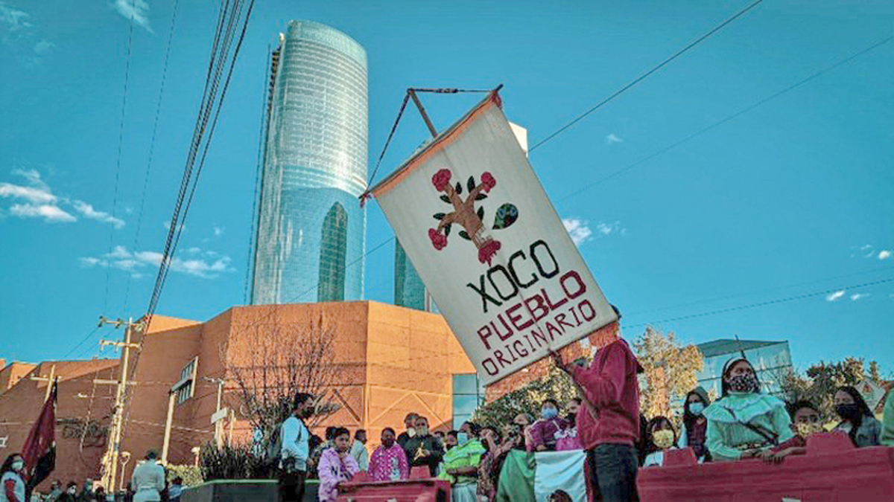

Se hara una pagina web interactiva, en donde el usuario pueda involucrarse y tener un recorrido libre, simulando de manera muy simple y basica la dinamica de un videojuego. En la página el visitante dara click en los personajes que aparezcan en la pantalla, y eso lo redireccionara a otra página en donde se le compartiran testimonios de habitantes de la comunidad de Xoco. Nos interesa hablar de Xoco porque queremos problematizar el fenomeno de la gentrificación en la Ciudad de México. Nos enfocamos en Xoco, una zona que sufre cada vez más el fenómeno de la gentrificación esta problematica, obligando a sus residentes originarios a ser desplazados a lugares con precios más asequibles. Se busca demostrar cómo Xoco paso a ser una zona donde todos se conocian, habian fuertes redes de solidaridad y confianza, y ahora estan siendo destruidas por las grandes inmobiliarias.
